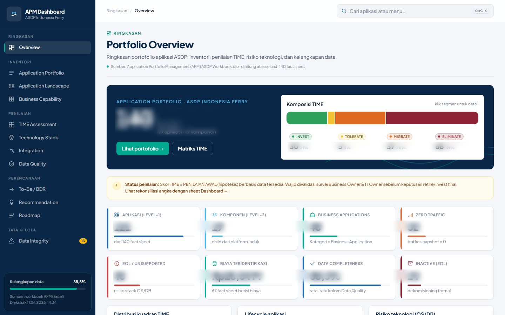

Hi, I'm 👋
Agnes Elyestra Sidabutar
I help IT teams ship with confidence: keeping initiatives aligned, documented and audit-ready, and acting as the quality checkpoint before every release.
Three strengths, one goal: reliable IT
My work at ASDP sits where planning, compliance and testing meet, so I understand both why a system should be built and whether it actually works.
IT Governance & Compliance
Prepare governance, risk, audit and compliance documentation. Maintain the application portfolio and help prioritize IT initiatives against business needs.
Quality Assurance
Turn business requirements into test scenarios. Run functional, regression, SIT and UAT cycles, validate APIs and measure performance before go-live.
Data & Technical Foundation
Hands-on in Python, SQL and data analysis, plus experience building web, mobile and AI/ML apps, so I speak the same language as developers.
A few things I've built

APM Dashboard
Turns the Application Portfolio Management workbook into an interactive governance dashboard.
View projectAmbarita Digital
Digital village platform: online letters, UMKM marketplace and news on web and mobile.
View projectDentalogic8
On-device dental caries detection with YOLOv12 and ONNX, built in React Native and Flutter.
View project
Let's work together
I'm open to roles in IT governance, IT risk & compliance and quality assurance.